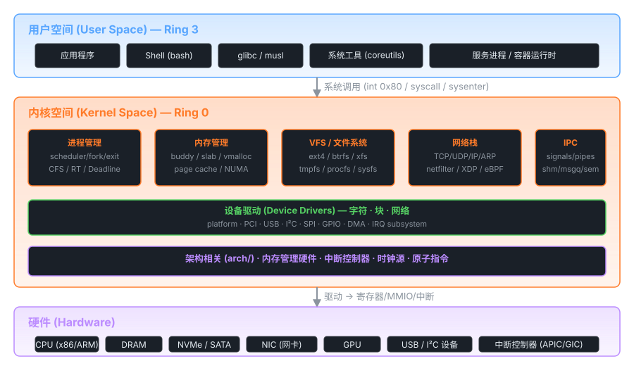

🐧 Linux 内核学习指南
一份系统性的、从入门到专家级的 Linux 内核学习路径。 以 Linux 0.11（仅 14000 行）为切入点理解全貌，以 Linux 2.6 / 5.x / 6.x 对照现代演进。 每章包含：核心机制讲解、源码逐行解析、SVG 架构图、可动手实验。
现代 Linux 内核已超过 3000 万行代码，直接读完不现实。 本指南遵循"小内核入门 → 现代内核拓展 → 专家级专题"的路径：
- Linux 0.11：14k 行包含 OS 全部核心概念，可完整读完
- Linux 2.6.0：现代框架成型，VFS/kobject/RCU 全部就位
- Linux 5.x/6.x：CFS、eBPF、io_uring、容器、KVM 等专题深入
🗺️ 内核架构全景

📚 章节导航
入门与准备
四阶段路线图、每周计划、推荐书单、每日学习节奏。
0.11 / 2.6.0 / 4.x / 5.x / 6.x 全面对比，源码导航。
QEMU + GDB + VS Code + BusyBox + KGDB + crash 全套工具链。
核心子系统
task_struct、fork、调度器、上下文切换、preemption、idle/init。
页表/TLB、buddy/slab、NUMA、page cache、kswapd、OOM、THP。
VFS 四大对象、ext2/ext4、日志、page cache 写回、fsync、io_uring。
int 0x80 / syscall / sysenter、vDSO、seccomp、自定义 syscall。
设备模型、字符/块/平台驱动、设备树、MSI、DMA、IRQ。
sk_buff、TCP 状态机、netfilter、conntrack、NAPI、XDP。
原子操作、自旋锁、mutex、RCU、futex、percpu、memory barrier。
专家级深入
vruntime、红黑树、调度域、负载均衡、EAS、autogroup。
8 种 namespace、cgroups v1/v2、OverlayFS、runc 内部原理。
verifier、JIT、maps、XDP、kprobe、uprobe、bpftrace 实战。
IRQ 子系统、softirq、tasklet、workqueue、threaded IRQ、IPI。
BIOS/UEFI、bootloader、EFI stub、KASLR、ACPI、initramfs、systemd。
ftrace、perf、KASAN、lockdep、livepatch、kdump、crash dump 分析。
📖 配套书单
-
《Linux 内核完全注释》入门首选 · 配合 Linux 0.11 源码逐行注释，中文资料中无可替代
-
《深入理解 Linux 内核》(Understanding the Linux Kernel)进阶必读 · 基于 2.6 内核全面拆解，是中级开发者的"圣经"
-
《Linux 设备驱动程序》(Linux Device Drivers, 3rd ed)驱动开发权威 · 官方电子版免费 (LWN)
-
《Linux 内核设计与实现》(Linux Kernel Development)综合理解 · 文笔流畅，覆盖广，适合通读
-
《深入 Linux 内核架构》(Professional Linux Kernel Architecture)深度参考 · 1000+ 页详尽剖析，作字典用
-
《BPF Performance Tools》现代可观测性 · 学完 12 章后必读
-
《操作系统：精髓与设计原理》理论基础 · 没有 OS 背景请先读此
🔗 关键资源
- 📂 在线源码浏览（最佳）：elixir.bootlin.com/linux
- 📦 Linux 0.11 源码：github.com/karottc/linux-0.11
- 📦 Linux 2.6.0 源码：mirrors.edge.kernel.org
- 📜 官方文档：kernel.org/doc/html/latest
- ✉️ LKML 邮件列表：lkml.org
- 📰 LWN 技术新闻：lwn.net
- 🛠️ 内核新手任务：kernelnewbies.org
建议按顺序学习 00 → 02，之后核心子系统 (03~09) 可按兴趣穿插， 专家章节 (10~15) 待核心扎实后再读。每章末尾都有"动手实验"小节， 务必在 QEMU 中亲自跑过 GDB 才能真正掌握。